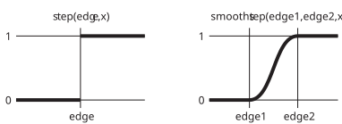

Page 24: Aliasing
One Way to Fix Aliasing
If you look at the dots on the previous page (repeated below), you’ll notice that you can see the pixel boundaries on the texture. Since a point is either part of a dot or not, each pixel matters. As the dots get smaller, this can be ugly. This causes the jagged edges (called “jaggies” - yes, that’s a technical term).
The problem is that we are making the pixels either light or dark - nothing in between. Even if a pixel is half full of a dot, it has to be either light or dark.
A different way to look at it: for each pixel, we compute the color at the center and make the entire pixel be that color. Since that point is either inside or outside of the dot, we choose a color for the pixel.
Here is an example in 06-24-01.js (06-24-01.html)
view - look at the box and experiment with it
examine - look at the code for the box
edit - change the box's content
rubric - several steps are suggested in the rubric page - form elements on page in rubric
06-24-01.html 06-24-01.js
An answer to this is to make the cutoff for inside/outside less severe. We can “blur” the dots - making the boundary fuzzy. The transition between inside and outside can be gradual. That way, a pixel can represent the boundary correctly. If you select “large blur” you can see that in action. Notice that things look blurry, but the shapes are smooth (not jaggy).
To make implementing things like this easier, we use a common GLSL idiom. On the previous page, we used step to cause the variable that measures whether we are “inside the dot” to switch from 0 to 1 as the distance to the dot center exceeds the radius.
1float dc = step(radius,d);
2 gl_FragColor = 1.0-vec4(mix(light,dark,dc), 1.);Here, we change that to use the smoothstep function which gradually transitions from 0 to 1 over a range centered at the threshold. The width of this range is the “blurriness”. Since we are using the mix function, if we are in the transition zone, we get a blend of colors.
1float dc = 1.0-smoothstep(radius-a,radius+a,d);
2 gl_FragColor = vec4(mix(light,dark,dc), 1.);Here’s a graph showing what smoothstep does:
 Both step and smoothstep return a value in range 0-1. step switches at an edge, while smoothstep makes a C(1) transition starting at edge1 and ending at edge2.
{kind=link}
By making the transition range a bigger, the line gets blurrier. If a is too big, it will look blurry. if a is too small, we will have aliasing. The trick is to find a balance. Ideally we would make the blur one pixel wide - just big enough to avoid aliasing.
Try “correct anti-aliasing” and see the best we can easily achieve. We’re still blurring the edge, we’re just making the blurriness one pixel wide (rather than fixed in UV space). GLSL has support to help us do that. Basically, it takes the derivative of u and v with respect to screen coordinates to see how much they change. This is a slightly advanced topic - but it is really important for making nice-looking texturing.
GLSL can compute the derivative of a value (like u and v) with respect to screen space x and y. It basically tells us how much the value changes between pixels. It has a convenient function fwidth that is used in the shader to implement “correct anti-aliasing” - it basically computes the magnitude of the vector derivative (in x and y directions).
Note that this is exactly the same problem as trying to figure out what level of the mip-map to look up when we filter image-based textures.
The triangle edges
Our strategy addresses aliasing in the texture. It does not address aliasing at the triangle edges. We can’t do that in the fragment shader: it only works within a triangle. In fact, it isn’t clear how to do it within the rasterization pipeline, period: to correctly anti-alias at the triangle boundaries, we need to consider multiple triangles, which violates the independence assumption!
Image-based textures have the same problem.
Methods for anti-aliasing triangle edges are different, and much more challenging. This is part of the reason why we prefer texture maps to collections of small triangles.
Summary: Anti-Aliasing
If you get jaggy-looking textures, you need to do something about it. This is called “anti-aliasing”.
For now we’ll move on to Next: Page 25 - Noise and learn how to use images in textures.